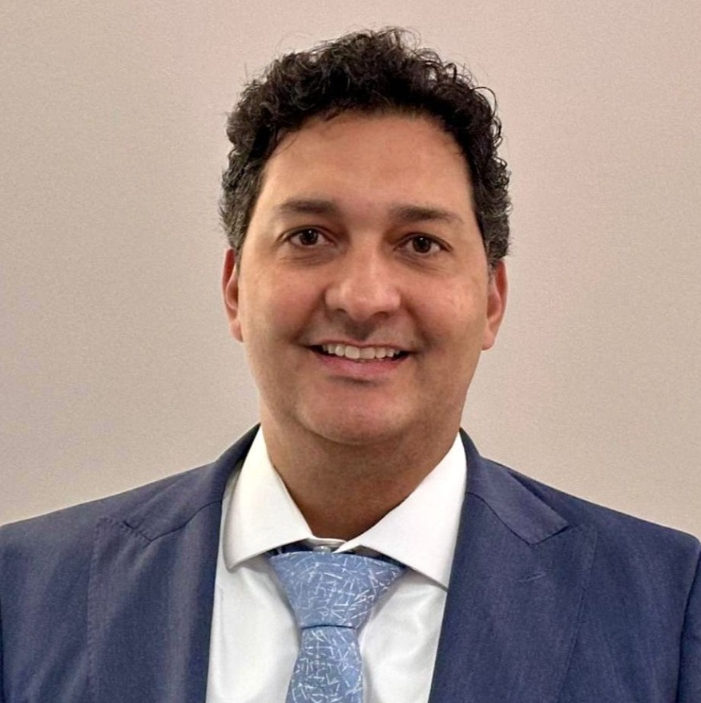

Dr. Rogério Furtado é especialista em Cirurgia Refrativa, Blefaroplastia e Implante de Lentes Multifocais — devolvendo liberdade visual a centenas de pacientes em Sobradinho-DF há mais de 15 anos.
Meu objetivo não é apenas operar — é devolver ao paciente a liberdade de viver sem depender de óculos para enxergar o próprio mundo.
— Dr. Rogério de Souza Furtado
Oftalmologista · Hospital de Olhos Salute
Cada olho é único. Antes de qualquer procedimento, o Dr. Rogério mapeia seu perfil visual completo para encontrar o caminho certo rumo à sua liberdade — sem atalhos.
Decidir se operar exige segurança. O Dr. Rogério constrói essa confiança com transparência total — explicando cada etapa, cada risco e cada benefício antes de qualquer decisão.
A jornada não termina na sala cirúrgica. O acompanhamento contínuo do pré ao pós-operatório garante que sua liberdade visual seja conquistada — e mantida para sempre.
5.0
Avaliação média
"O Dr. Rogério é extremamente cuidadoso e atencioso. Minha cirurgia de catarata foi perfeita — saí enxergando o mundo com clareza que não tinha há anos."
Paciente · Google Reviews
500+
Mais de quinhentas histórias de recuperação da visão, construídas com a mesma atenção dedicada ao primeiro paciente.
A catarata rouba sua visão de forma silenciosa — e com ela, sua liberdade. A cirurgia remove a lente opacificada e implanta lentes intraoculares premium (multifocais ou EDOF), devolvendo uma clareza que muitos pacientes não sentiam há décadas.
O excesso de pele e as bolsas de gordura nas pálpebras fazem o olhar parecer cansado — independente de como você se sente. A blefaroplastia corrige essa condição com precisão cirúrgica, devolvendo um aspecto descansado, jovial e naturalmente expressivo ao seu olhar.
Acorde amanhã sem precisar dos óculos. A cirurgia refrativa corrige miopia, astigmatismo e hipermetropia com tecnologia de precisão milimétrica. LASIK para recuperação ultrarrápida; PRK para quem tem córneas mais finas — técnica selecionada pelo Dr. Rogério após avaliação individual completa.
Acordar sem procurar os óculos. Nadar, dirigir, trabalhar e ler sem depender de nada. Esse é o objetivo de cada cirurgia realizada pelo Dr. Rogério — devolver sua liberdade visual de forma definitiva, segura e personalizada para o seu perfil.
A porta de entrada para a liberdade visual. Correção cirúrgica da miopia, hipermetropia ou astigmatismo com técnica consagrada — para quem quer se libertar dos óculos com segurança e custo acessível.
Saiba maisIdeal para quem depende dos óculos para enxergar de longe. Com mapeamento corneal individual, o Dr. Rogério entrega uma correção sob medida para sua anatomia — visão nítida a distância, sem óculos, todos os dias.
Saiba maisO equilíbrio perfeito entre liberdade e custo-benefício. Visão nítida a distância com redução significativa da dependência dos óculos de leitura — dirigir, trabalhar e ler com muito mais leveza no dia a dia.
Saiba maisA experiência máxima de independência visual. Com Implante de Lentes Multifocais de última geração, você conquista visão funcional em todas as distâncias — longe, intermediária e perto. Viver sem óculos em praticamente nenhum momento do dia.
Saiba maisO plano ideal é definido após avaliação oftalmológica completa com o Dr. Rogério. Consulte disponibilidade.
UnB · Faculdade de Medicina · Brasília-DF
Hospital de Base do DF (HBDF) · Brasília-DF
Sobradinho-DF · +20 anos de excelência
Cirurgias de alta complexidade · CRM-DF 10851 · RQE 5861
Filiações e Registros
Formado na Universidade de Brasília e especializado no principal hospital de referência do Distrito Federal, o Dr. Rogério construiu sua formação nos mais rigorosos centros de excelência da Capital Federal — base sólida para uma prática cirúrgica de altíssima precisão.
O Hospital de Olhos Salute, localizado em Sobradinho-DF, é um dos centros oftalmológicos de maior prestígio do Distrito Federal. Com mais de duas décadas de atuação, é referência em cirurgias de alta complexidade e atendimento humanizado.
Como Diretor Clínico, o Dr. Rogério lidera os protocolos de qualidade, segurança cirúrgica e atualização tecnológica que posicionam o Salute entre os melhores centros oftalmológicos do Centro-Oeste.
O Dr. Rogério atende pelos principais convênios de saúde do Distrito Federal. Digite o nome do seu plano para verificar.
Convênio não localizado
Não localizamos seu convênio na lista. Entre em contato para verificar condições de atendimento particular ou outras formas de acesso.
Verificar condições via WhatsAppConsulte disponibilidade. Lista sujeita a atualizações. Confirme no agendamento.
O atendimento do Dr. Rogério é conduzido por protocolo exclusivo — com contato prévio personalizado para garantir que sua experiência seja preparada com a atenção que você merece.
Atendimento diferenciado · Somente com contato prévio